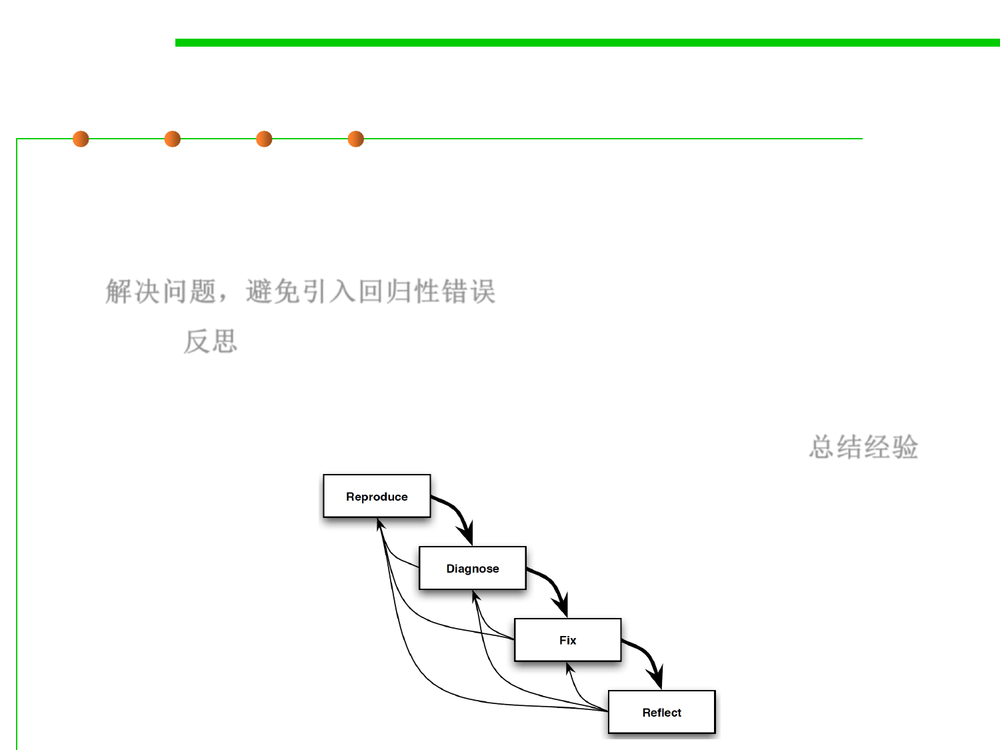

Debugging Process
7.4 Debugging
▪ Fix:
– Design and implement changes that fix the problem, avoid introducing
regressions, and maintain or improve the overall quality of the software.
解决问题，避免引入回归性错误
▪ Reflect: 反思
– Learn the lessons of the bug. Where did things go wrong? Are there any
other examples of the same problem that will also need fixing? What can
you do to ensure that the same problem doesn’t happen again? 总结经验